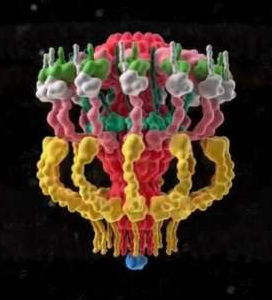
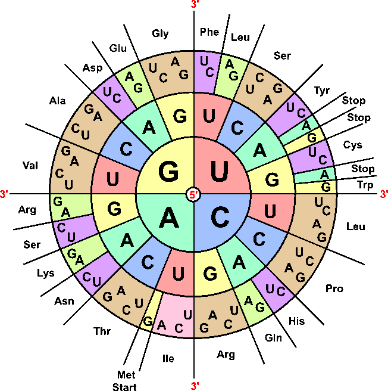
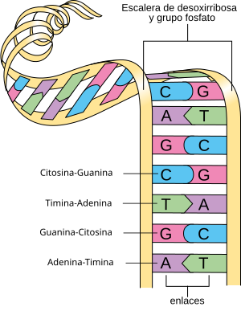
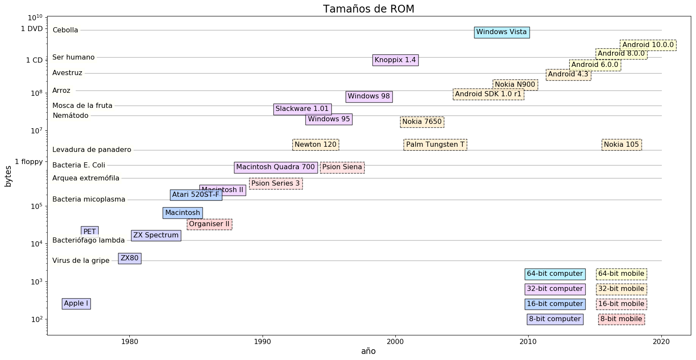
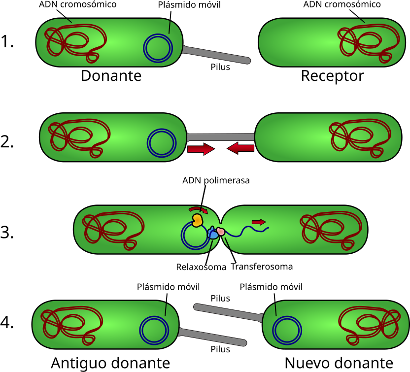
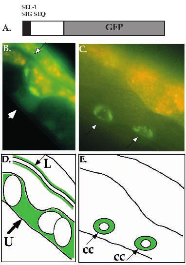
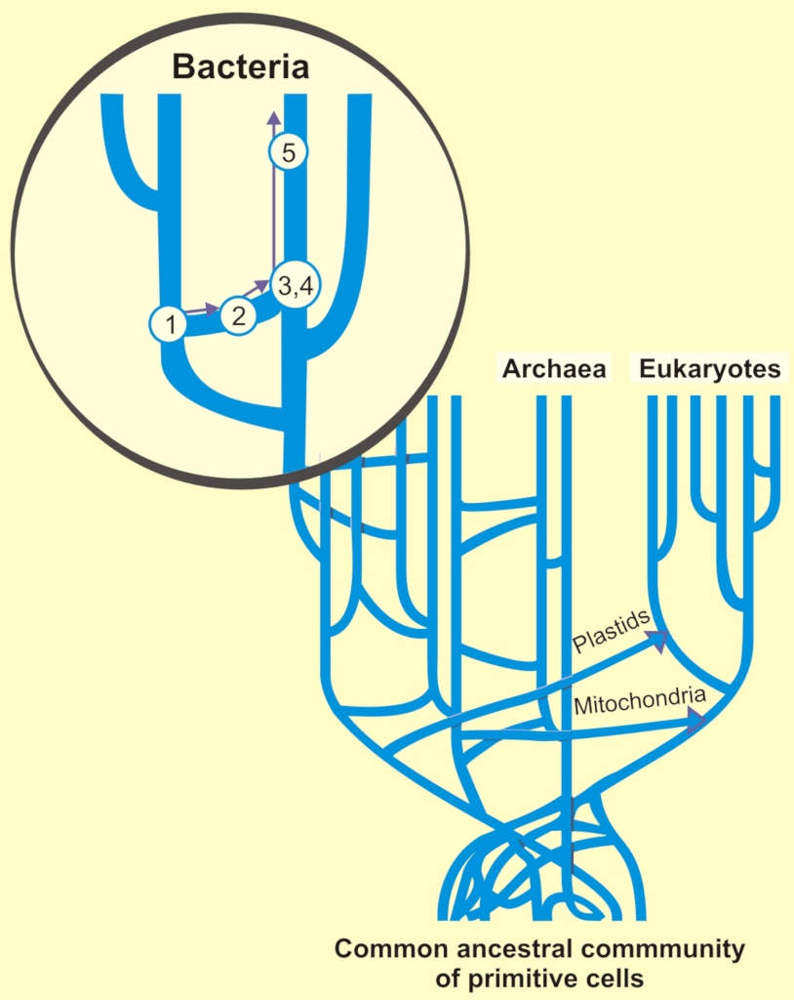

⚙️ Tecnología bacteriana
Parte 2 de la serie «🦠 Bacterias: máquinas que dominan el universo»

Si eres tecnóloga o tecnólogo, la fascinación por estas pequeñas amiguitas sólo puede crecer al estudiar la sofisticada tecnología que son capaces de desplegar.
La estructura del ADN
Vamos a empezar con una historia fundacional digna de una superheroína como Rosalind Franklin.
Corría el año 1953. Varios laboratorios a ambos lados del Atlántico intentaban craquear el código genético. El ácido desoxirribonucleico (ADN, o DNA en inglés) era el mayor sospechoso de albergar la información genética de la célula. Rosalind Franklin, cristalógrafa del King’s College, intentaba dilucidar la estructura del ADN por difracción de rayos X.
Watson y Crick por su parte estaban sentando las bases matemáticas para analizar la molécula. Por caminos oscuros obtuvieron el trabajo de Franklin, el más avanzado de la época, y lo usaron para descifrar la doble hélice. Como resultado Watson, Crick y Wilkins, éste último compañero de Franklin, recibieron el premio Nobel de medicina en 1962. Por su parte, Franklin murió en 1958 de cáncer de ovarios, posiblemente provocado por su trabajo con rayos X.
Esta historia es muy susceptible de interpretarse como la de una mártir feminista heroica, traicionada por sus colegas sexistas que le robaron el premio Nobel; de hecho es la idea que yo tenía antes de escribir este artículo. Pero siempre es interesante seguir cavando un poco más. Su biógrafa Brenda Maddox no está de acuerdo con esta interpretación, y cree que debe ponerse más el foco en su brillante carrera científica. Parece que a ella personalmente sólo le preocupó el avance científico y no el reconocimiento, y siempre estuvo lejos de ser la figura amargada y hosca que Watson describe en The Double Helix. Pero, ¿acaso no fue una injusticia que no se le reconociera en el premio Nobel? La realidad es que el premio Nobel sólo se concede a personas vivas (salvo rarísimas excepciones), así que no había posibilidad de reconocer el trabajo de Franklin. Podemos ver el nombramiento de Wilkins como un reconocimiento implícito a una gran científica.
Que cada cual saque sus propias conclusiones; yo por mi parte tengo claro que Watson y Crick no habrían descubierto nada sin Franklin, pero Franklin seguramente habría llegado a la doble hélice por sí sola. En cualquier caso este descubrimiento abrió la puerta a un mundo apasionante que a día de hoy sigue dándonos sorpresas.
Material genético
El genoma es el conjunto de material genético (ADN o ARN) de un organismo vivo. Contiene las instrucciones para fabricar todas sus proteínas, que a su vez serán las encargadas de realizar todas las funciones de cada célula. El proceso de transcripción funciona como un ordenador de 6 bits: cada “palabra” consiste en tres pares de bases que contienen dos bits cada uno, y se traduce en un aminoácido distinto siguiendo una tabla que varía según el tipo de organismo. Este “código ensamblador” traduce los 64 posibles valores a 20 aminoácidos + inicio + fin, con una sofisticada corrección de errores.

{kind=link}
Cada proteína es una secuencia fija de aminoácidos que se pliega consiguiendo estructuras complejísimas, que veremos más abajo. El problema del plegamiento de proteínas en 3D es computacionalmente muy intensivo: resulta casi imposible predecir la estructura final sin una simulación detalladísima de las fuerzas de cada aminoácido.
Esta introducción es muy somera y no tiene en cuenta factores como pseudo-genes o material no codificante, sobre cuyas funciones todavía no hay consenso; ni siquiera sabemos si tienen utilidad o no (spoiler alert: casi seguro que sí). Más abajo veremos algunos detalles más. Pero vamos a ver cómo se traducen estos mecanismos a otros que seguramente serán más familiares.
Memoria
En los ordenadores modernos distinguimos entre memoria de sólo lectura (ROM) donde suele venir la información escrita de fábrica; y memoria de acceso aleatorio (RAM), que se usa para escribir datos y puede modificarse.
Tamaño de ROM
El genoma es en principio memoria de sólo lectura, y podemos por tanto compararlo con la ROM de un ordenador. La unidad usada se corresponde con un nucleótido, pareado siempre con otro en la doble hélice; de ahí que se midan pares de bases (o “bp” en inglés, por base pairs).

{kind=link}
Los virus tienen un genoma que oscila entre 1700 pares de bases y 2.8 millones de pares de bases. El rango más habitual es entre 4 kbp y 20 kbp. Las bacterias están en un rango más estrecho; quitando anomalías como micoplasmas, sus genomas tienen entre 1 y 10 Mbp.
Las eucariotas unicelulares ocupan el siguiente escalón: alrededor de 10 Mbp. Invertebrados, plantas y mamíferos están entre 100 Mbp y 10 Gbp, con múltiples anomalías de criaturas con genomas enormes. Por ejemplo la cebolla común Allium cepa tiene, por algún motivo, cinco veces más pares de bases (18 Gbp) que un ser humano (3.2 Gbp). Es un ejemplo lo que se conoce como enigma de los C-values: no hay una relación estricta entre complejidad de un organismo y el tamaño de su genoma. Y mejor no hablemos de Paris japonica, una planta con 150 Gbp.
Resulta que cada par de bases (bp) son dos bits, así que un byte serán 4 bp. Con esta sencilla equivalencia podemos dar un salto conceptual a otra de nuestras áreas favoritas: los ordenadores personales y de bolsillo, éstos últimos más conocidos como smartphones. Podemos mirar la memoria que trae escrita de fábrica (ROM), o si el sistema operativo se carga bajo demanda buscar el tamaño de la imagen original. Así podemos comparar la información que llevan de fábrica nuestros dispositivos y los organismos vivos.

Un virus tiene la misma ROM que un ZX Spectrum, legendario ordenador de 8 bits. Una bacteria contiene la información equivalente a una PDA Psion Siena, una consola de 16 bits. La levadura de panadero equivale a una Palm Tugsten T, de 32 bits. Por su parte, las eucariotas van de un Windows 95 (32 bits) a un Windows Vista (64 bits), o bien de un Nokia 7650 (32 bits) a una Android 10 (64 bits). El ser humano tiene algo más de información que un CD-Rom, y por lo tanto que la distribución de Knoppix en CD; y algo menos que un móvil con Android 8.
Pero esto es sólo el sistema operativo, sin tener en cuenta todavía programas y aplicaciones. ¿Cuál sería su equivalente en el genoma?
Memoria interna
En un organismo vivo es necesario primero transcribir el ADN en ARN. El ARN es por tanto similar a la RAM o memoria de lectura y escritura: suele hacer de mensajero y de regulador de la generación de proteínas. En las bacterias hay unas seis veces más ARN que ADN
La cosa no acaba ahí. Las bacterias tienen, igual que las eucariotas, memoria epigenética: ciertas condiciones del entorno (encontradas localmente o incluso heredadas) pueden hacer que se expresen ciertos genes y se supriman otros. Esto se consigue de varias formas, entre ellas marcando químicamente partes del genoma (con grupos metilo).
Toda esta información está dentro de la “memoria de trabajo” de una célula. Es así como la célula se adapta al medio en el que trabaja.
Memorias externas
¿Hay alguna posibilidad de acceder a más memoria en una célula? Por supuesto, hay varios mecanismos bastante sofisticados.
Las bacterias pueden también recibir genes externos a través de virus: los bacteriófagos pueden funcionar como reserva de genes para sus anfitriones bacterianos. Los fagos “templados” pueden reproducirse sin destruir a las bacterias anfitrionas. Incluso los fagos virulentos pueden permitir a las bacterias anfitrionas reproducirse durante muchas generaciones.
En las cianobacterias del mar, por ejemplo, los cianófagos almacenan genes de fotosíntesis que pueden aportar a sus víctimas en el momento de infectarlas. Lo mismo ocurre en tierra firme, y en las profundidades marinas con genes para alimentarse de sulfuros.
Estos virus servirían pues como discos duros externos: se guardan un gen que luego pueden aportar si se deteriora el gen original. O incluso servir de librería genética en un momento dado. Podemos imaginar este mecanismo como un tipo de backup en la nube. Todavía hay mucho que investigar en este campo, y seguro que nos tienen guardadas muchas sorpresas.
Red de redes
Hablando de la nube, ¿se comunican unas bacterias con otras? ¿Pueden intercambiar genes directamente?
Existen mecanismos como los priones que permiten compartir estos cambios rápidamente entre una población entera de bacterias. Se trata de unas proteinas que cambian de forma al entrar en contacto con la forma modificada. La enfermedad de las vacas locas (encefalopatía espongiforme bovina) está causada por un prión. Se puede transmitir poca información de esta forma: para ser exactos, un bit (prión inactivo -> prión activo).
También hay intercambio directo de genes. Algo que se conoce desde hace tiempo es la conjugación bacteriana: una bacteria inyecta un trocito de ADN llamado plásmido en otra.

{kind=link}
La cosa no queda ahí. Las bacterias pueden de hecho tomar plásmidos que están sueltos por ahí en el medio e integrarlos en su ADN: es lo que se llama transformación genética. Si todavía no tienes miedo, piensa que hay plásmidos en entornos contaminados que codifican resistencia a múltiples antibióticos y a metales pesados. Las bacterias integran los plásmidos cuando los necesitan, y los pierden cuando dejan de ser útiles.
La transferencia de genes no sólo ocurre en procariotas. Si le damos de comer al nematodo C. elegans un plásmido fluorescente, se lo traga y empieza a expresar la proteína. El resultado es muy bonito y útil a la vez para discriminar cuándo expresa ciertos genes.

Los genetistas están empezando a darse cuenta de la importancia de la transferencia horizontal en la evolución.

{kind=link}
Limpieza de código
Al igual que en cualquier desarrollo de software, en el genoma se va acumulando código muerto en forma de pseudo-genes: vestigios de genes que ya no funcionan. Como en cualquier programa informático, llega el momento en el que es buena idea limpiar y reducir el tamaño del código generado. En un equipo de desarrollo ya es una tarea bastante difícil. ¿Cómo se hace esto en la Naturaleza?
Puede ser instructivo estudiar el genoma de las aves, que es mucho más reducido que el de mamíferos y reptiles. Además tiene menos repeticiones y muchas más deleciones (pérdidas de secuencias de ADN). Cualquier desarrolladora que se precie sabe que el código repetido es la pesadilla de una buena profesional del software, y que se elimina con una costosa refactorización. Así que podemos decir con tranquilidad que el genoma de los pájaros está mejor refactorizado y tiene menos código muerto que el de los mamíferos. ¿Qué guía esta reducción de código?
¿Podría ser una reducción de peso que ayude a volar? No es descabellado; al fin y al cabo el genoma representa el 1% del peso de una célula en mamíferos, o más bien el 5% si contamos ARN que podemos suponer proporcional. Un ser humano adulto de 70 kg lleva encima una mochilita de 3.5 kg de ADN y ARN. Además esta reducción de genoma se da más a menudo en pájaros y murciélagos; y el ave con el genoma más grande es el avestruz, que casualmente no vuela.
La realidad parece que es más complicada: el tamaño del genoma determina el tamaño de la célula, y éste a su vez la eficiencia del metabolismo. Personalmente no descarto que el peso del genoma haya sido también un factor.
En las bacterias es el azar quien guía el proceso, con ciertas ayudas. Nuestras amigas tienen una fuerte tendencia a eliminar código genético. Si el resultado es viable, es probable que en unas cuantas generaciones el genoma se reduzca. Sería interesante entender por qué es ventajoso para una bacteria reducir su genoma, aunque nos puede dar una pista pensar que ADN+ARN representan el 23% del peso de E. coli: una variante con menos genes necesitará menos recursos para reproducirse.
Este proceso puede hacerse manualmente. Por ejemplo un equipo de científicos consiguió una reducción manual de genoma en E. coli: de 4.4 Mbp a 4.263 Mbp. Pero parece que la evolución es mucho más fina.
Por ejemplo, Mycobacterium leprae tiene 3.3 Mbp, mientras que su antecesor M. tuberculosis tiene 4.4 Mbp. Por el camino M. leprae ha perdido unos 2000 genes; ahora depende de las células del anfitrión para multitud de funciones vitales. Vemos cómo durante la evolución una bacteria puede eliminar no sólo código genético, sino incluso funcionalidades enteras que se podrían considerar esenciales.
Máquinas
Hasta ahora hemos revisado el código genético, pero en las bacterias hay muchas más cosas. Los genes codifican unas proteínas que las convierten de forma efectiva en máquinas. Cada proteína es una macromolécula que actúa como una herramienta muy pequeñita, con un papel determinado para conseguir sus fines. Este vídeo muestra cómo funciona un pelo de bacteria: extensión y retractación rápidas que le permiten moverse.
La generación de energía se realiza en la proteína ATP sintasa, una especie de motor que funciona con una eficiencia cercana al 100%, impensable para motores industriales. A mí me recuerda mucho a un molinillo de café.
Las kinesinas y dineínas son maquinitas moleculares que meten nutrientes y sacan los desperdicios de la célula usando ATP como combustible. Caminan por los microtúbulos, una especie de autopistas celulares exclusivas de las eucariotas, aunque en 2011 se descubrió el equivalente bacteriano.
En el futuro es posible que podamos usar bacterias como nanobots, por ejemplo con regulación magnética. También como almacenamiento de información o incluso como procesadores biológicos.
PCR
Todo esto está muy bien, pero nos sirve de poco al género humano. ¿Hay algo por ahí que podamos usar nosotros? Hablemos de la polymerase chain reaction o PCR, una herramienta bacteriana usada por ejemplo en los famosos tests que detectan el coronavirus. Su descubrimiento le valió un premio Nobel a Kary Mullis en 1993. Consiste en usar una polimerasa obtenida de la bacteria Thermus aquaticus para amplificar un fragmento de ADN. Esto sirve para detectar el código genético de un ser vivo cualquiera, por ejemplo un virus patógeno. Pero también se puede usar para analizar genes humanos, amplificar ADN de fósiles o pruebas de paternidad.
Vamos a terminar esta sección con una nota triste. En agosto de 2019 Mullins murió de neumonía. ¿Es posible que finalmente las bacterias tuvieran su revancha?
Virus y simplicidad
Los virus son mucho más sencillos que las bacterias: como hemos visto, por el tamaño de ROM son equivalentes a un ordenador de 8 bits. Para empezar no se pueden reproducir por sí solos, sino que dependen completamente de la maquinaria de las células que invaden. Pero siguen siendo máquinas muy efectivas.
Al ser más sencillos también son más fáciles de modelar. Janet Iwasa ha realizado una animación bastante completa de cómo funciona el virus del SIDA. Aquí podemos apreciar cómo toda la maquinaria molecular funciona junta:
Replicación
Una bacteria tiene una maquinaria molecular mucho más compleja y autosuficiente. Esto le permite replicarse completamente en tan solo 18 minutos, aunque otras bacterias como M leprae (causante de la lepra) pueden tardar hasta 14 días. Por otra parte, si las condiciones no son óptimas algunas bacterias pueden tardar algo más: ¿qué tal diez mil años?
En el mejor de los casos los seres humanos tardamos décadas en reproducirnos. Esto nos da una idea de lo desigual de la evolución en estos ámbitos tan diferentes. En el próximo capítulo veremos cómo estos tiempos de replicación son cruciales para estudiar las enfermedades causadas por bacterias.
Continuará…
Este artículo es la segunda parte de la serie sobre bacterias. Sigue a la parte 3: El largo camino a la simbiosis, donde estudiaremos el sistema inmune y sus modos de fallo.
← Parte 1: 🦠 Y las bacterias,
bonita.
↑ Parte 2: ⚙️ Tecnología bacteriana.
→ Parte 3: 🖇️ El largo camino a la
simbiosis.
→ Parte 4: 🧑⚕️ Enfermedades
autoinmunes.
→ Parte 5: 🌠 ¿Venimos de las
estrellas?
→ Parte 6: 🤔
Conclusiones.
Publicado el 2022-03-06, modificado el 2022-03-06. ¿Comentarios, sugerencias?
Back to the index.